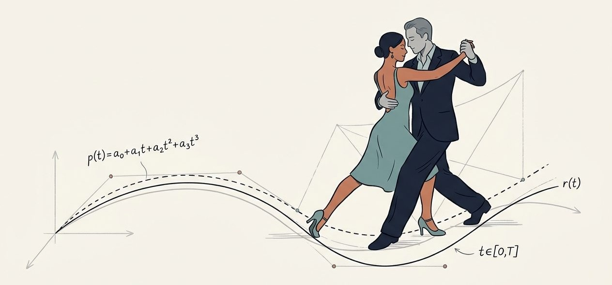
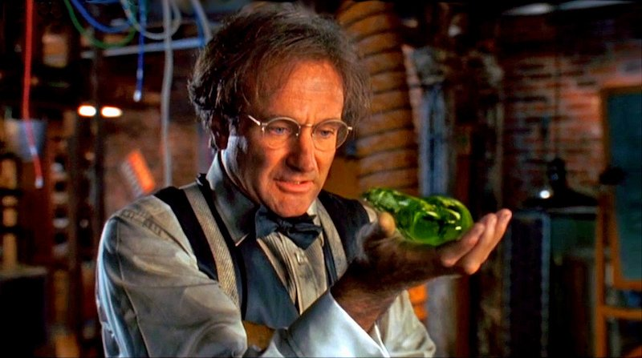
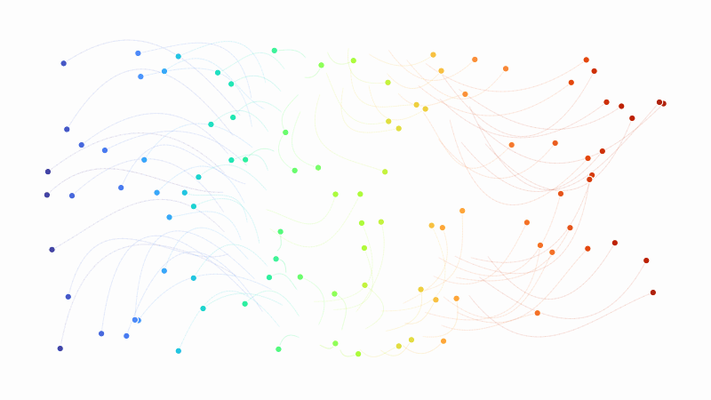
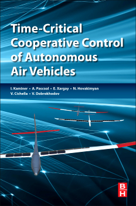
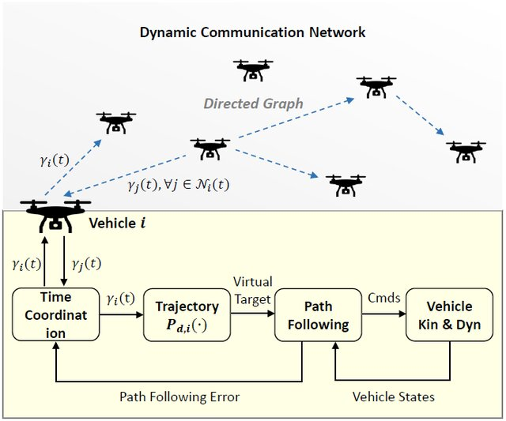
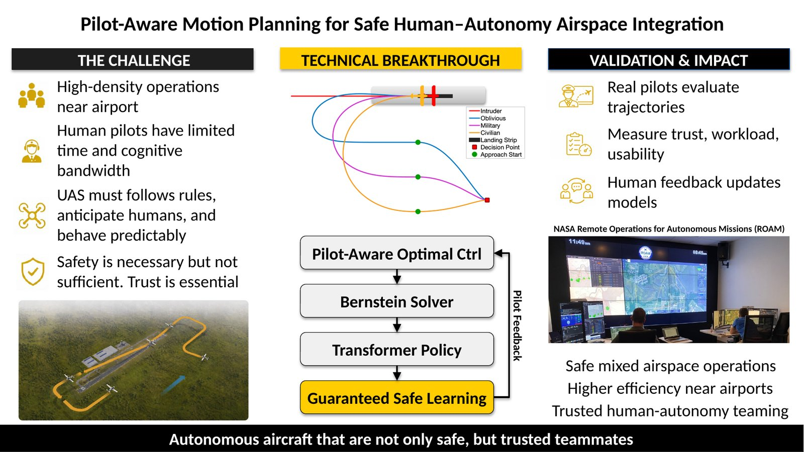

Research
My team develops the control and decision-making foundations that allow teams of autonomous robots to remain reliable when their models, information, and operating environments cannot be trusted.
The Vision
The long-term vision is to enable autonomous teams that keep operating safely and effectively when the assumptions under which they were designed no longer hold: when vehicles are damaged, environments change, communications degrade, sensing becomes incomplete, or mission objectives evolve.
As autonomous vehicles move beyond controlled test ranges into shared airspace, congested ports, and contested waters, these challenges become intrinsic to real-world operations. The goal is to develop autonomous teams that can adapt to such disruptions, turning a damaged vehicle, a lost communication link, or a changing objective from a reason to abort the mission into an opportunity to reconfigure, coordinate, and continue operating safely.
Resilient Autonomy in Contested and Congested Environments
The program has three connected thrusts. Thrust 1 makes individual vehicles dependable when their dynamics are uncertain. Thrust 2 builds team-level coordination on those vehicle-level properties when information and communication are also unreliable. Thrust 3 tests both on hardware and in realistic conditions, and the gaps it exposes become new questions for the theory.
Thrust 1
Reliable Vehicle Autonomy
A vehicle’s dynamics change during a mission: payloads and environmental loads such as wind, currents, and waves vary, actuators saturate or behave nonlinearly, and operating conditions drift from those assumed at design time. This thrust develops adaptive and robust controllers, including L1 adaptive control, adaptive reference management, and robust output regulation, whose stability and performance properties are proved for explicitly stated classes of uncertainty.
Learning enters where it improves speed or model fidelity, for example transformer networks that predict optimal trajectories in real time. We pair learned components with structure from control theory, such as Bernstein polynomial representations whose constraints can be checked directly, and we claim guarantees only where the analysis supports them.
Thrust 2
Cooperative Autonomy
Heterogeneous teams of aerial, ground, and underwater vehicles must decide what to do and when, even though each vehicle’s model is imperfect, sensing is partial, and communication links drop in and out. This thrust develops cooperative planning and control that connects team-level objectives, such as coverage, search, arrival timing, and separation, to motions each vehicle can actually execute.
The framework couples three layers: optimal trajectory generation, time coordination over time-varying and directed communication networks, and decentralized collision avoidance with limited or intermittent measurements. Ongoing work addresses missions whose goals change during execution, coupling high-level decisions with motion planning.
Thrust 3
Verified Autonomy
Guarantees are useful only if they hold on real vehicles, despite sensor noise, actuator limits, communication delays, and conditions not anticipated by the model. This thrust bridges theory and practice by developing realistic models for analysis and testing, and implementing controllers and planners on physical platforms. We validate our methods through indoor and outdoor experiments, high-fidelity simulation, and testing across a diverse range of autonomous systems, including ground robots, surface and underwater vehicles, small aerial robots, and fixed-wing UAVs.
The goal is to develop resilient autonomy that monitors its safety margins, remains robust to disturbances and uncertainty, and recovers when operating conditions exceed design assumptions. Human–robot interaction is an integral part of this effort whenever people share the operating environment, including pilot-centric trajectory planning for autonomous aircraft near airports and virtual-reality studies of human interactions with multicopters.
How We Are Building the Capability
Each project below advances one thrust; together they move the program from guarantees for a single vehicle to resilient teams operating in the real world.
Thrust 1Reliable Vehicle Autonomy
ONR
Adaptive maneuvering control of a generic submarine
Path-following and trajectory-tracking guidance laws, built on an inner-loop adaptive controller, steer a generic submarine along three-dimensional paths. The design uses a reduced-order model that is built and validated from computational fluid dynamics and accounts for the depth and wave effects that dominate near the free surface. MacLin, Hammond, Cichella, and Martin, Control Engineering Practice, 2024
Polynomial internal model principle-based control
In collaboration with Prof. Lorenzo Marconi at the University of Bologna, we develop controllers based on the internal model principle (IMP) in which the exosystem generating references and disturbances is a polynomial. Polynomial internal models give robust output regulation for signals that classical exosystems cannot generate, including Bernstein/Bézier and other unstructured signals over a finite horizon. This makes the approach a natural fit for function approximation, for tracking trajectories produced by motion planners, and for model predictive control. Cichella, Lovett, Bin, Mimmo, and Marconi, IEEE Control Systems Letters, 2026; Cichella, Mimmo, and Marconi, ACC 2026; Mimmo, Cichella, and Marconi, IEEE CDC 2026

PDE-based optimal control with Bernstein surfaces
Many systems are governed by partial differential equations rather than ordinary ones, such as soft continuum robots whose shape evolves in both space and time. This work extends the Bernstein approach to these problems: Bernstein surfaces approximate the solution in space and time, so constraints on the shape, its curvature, and the surrounding obstacles can be enforced over the whole domain. It has been applied to path planning for continuum rods, to constrained planning for soft continuum robots, and to large multi-agent teams modeled as a continuum. The same formulation applies to shape-morphing robots: the body itself is a Bernstein-parameterized surface whose control points are optimized, so a robot can be steered between target shapes while keeping its deformation smooth, feasible, and clear of obstacles. Hammond, Lovett, Pugliese, Cichella, and Lamuta, IEEE Open Journal of Control Systems, 2025; Hammond et al., IEEE RoboSoft 2024; Hammond et al., IEEE CDC 2025

Thrust 2Cooperative Autonomy
NSF · ONR · Amazon Research Award
Optimal multi-vehicle motion planning with Bernstein approximants
Multi-vehicle motion planning is posed as a continuous-time optimal control problem and solved with Bernstein polynomial approximations, which make speed, turn-rate, inter-vehicle separation, and obstacle constraints cheap to enforce over the whole trajectory. The paper proves that the discretized solutions converge to the continuous-time optimum, and the method is implemented in the open-source BeBOT toolkit. With an Amazon Research Award, the work extends to optimal control and concurrent task allocation and planning for large-scale multi-robot systems. Cichella, Kaminer, Walton, Hovakimyan, and Pascoal, IEEE Transactions on Automatic Control, 2020

ONR
Safe coordinated maneuvering of multirotor teams
A cooperative control framework combines trajectory generation, time-critical coordination over time-varying networks, and path following, with analytical conditions for coordination and inter-vehicle safety. The coordination laws were demonstrated in indoor flight tests with two quadrotors, and full multi-vehicle missions were evaluated in simulation. Cichella et al., IEEE Control Systems Magazine, 2016


Thrust 3Verified Autonomy
NASA · NSF
Autonomous aircraft near airports
With NASA, my group develops trajectory optimization for aircraft approaching and leaving airports, including pilot-centric planning for autonomous final approach and learning-based trajectory generation fast enough to run in real time. MacLin et al., AIAA Aviation 2025

Experimental validation on physical vehicles
Controllers and planners from the first two thrusts are implemented on hardware in the CAS Lab, whose motion capture system gives sub-millimeter position data for quadrotor UAVs and ground robots, and in outdoor experiments. Testing spans ground robots, surface and underwater vehicles, small aerial robots, and fixed-wing UAVs, and includes indoor flight tests of the time-coordination laws on two quadrotors and flight tests of thermal centering control for autonomous soaring. Cichella et al., IEEE Control Systems Magazine, 2016; Andersson, Kaminer, Dobrokhodov, and Cichella, AIAA Journal of Guidance, Control, and Dynamics, 2012. Videos are on the lab YouTube channel.
A validated model of the Joubert BB2 submarine
Underwater controllers cannot be tested freely at sea, so we built a reduced-order model of the Joubert BB2 generic submarine from computational fluid dynamics, including the depth and wave effects that dominate near the free surface. The model is the test bed for the adaptive maneuvering work in Thrust 1 and is released with Simulink and MATLAB implementations. MacLin, Hammond, Cichella, and Martin, Control Engineering Practice, 2024
Human–autonomy studies
When people share the operating environment, safety depends on how they perceive and respond to the vehicles. We study this directly: pilot-centric trajectory planning for autonomous aircraft is evaluated with pilots at NASA’s Remote Operations for Autonomous Missions facility, and virtual-reality environments are used to study how people interact with small multicopters flying nearby, including in a residential setting. Marinho et al., IEEE Virtual Reality 2016; Widdowson et al., AHFE 2017
Software
BeBOT (Bernstein/Bézier Optimal Trajectories) is my group’s open-source toolkit for generating optimal trajectories for one or many autonomous vehicles. It is available in Python, with MATLAB, C++, and CasADi versions. More code is on the lab GitHub.
We have also developed an accurate reduced-order model of the Joubert BB2 generic submarine, with Simulink and MATLAB implementations.
Funded Research
- 2026–2029 National Science Foundation (NSF), “Engineering Safe Artificial Intelligence for Autonomous Vehicle Decision Making and Motion Planning,” PI.
- 2024–2026 National Science Foundation (NSF), “EAGER:TaskDCL: Enhancing Airport Safety and Efficiency with Integrated UAS-Manned Aircraft Motion Planning,” PI.
- 2024–2027 Office of Naval Research, “Cooperative Planning and Coordination Strategies for Multiple UUVs in Limited Sensing and Communication Environments,” PI.
- 2024–2027 NASA, “Cooperative planning and control for the integration of increasingly autonomous vehicles into the airspace,” PI.
- 2023–2024 NASA – Iowa Space Grant Consortium, Partnership Development Travel Grants (PDTG), “Trajectory optimization for air traffic integration near airports,” PI.
- 2023–2024 NASA – Iowa Space Grant Consortium, “Trajectory optimization for air traffic integration near airports,” PI.
- 2023–2024 University of Iowa, “Building Undergraduate Student Research – Development and Control of a Multi-tentacle Soft Robot for Space Applications,” PI.
- 2023–2024 NASA, “Cooperative planning and control for the integration of increasingly autonomous vehicles into the airspace,” PI.
- 2022–2025 Office of Naval Research, “Underwater Vehicle Maneuvering in Complex Scenarios,” PI.
- 2022–2023 NASA – Iowa Space Grant Consortium, “Twisted and Coiled Artificial Muscle-based Soft Robots,” Co-PI.
- 2022–2023 Amazon, “An integrated approach to allocation and path planning for multi-robot systems,” PI.
- 2022–2023 Automotive Research Center – University of Michigan, “Modeling of a ground vehicle operating in shallow water,” Co-PI.
- 2022–2024 Office of Naval Research, “Experimental measurement of maneuvering dynamics and autonomy for a cycloidal propeller equipped amphibious UUV,” Co-PI.
- 2022–2023 NSF, STTR 2136298, “NSF STTR: Smart Semiautonomous Fluid Drainage System for Surgical Procedures,” PI.
- 2021–2024 Office of Naval Research, “Optimal Strategies for Cooperative Autonomous Systems,” PI.
- 2019–2022 Office of Naval Research, “Broadening Education in Naval Science & Technology with an Expanded Undergraduate Curriculum and Learning Community,” Co-PI.
- 2019–2020 Air Force Research Lab (AFRL), “Persistent monitoring of uncertain targets,” PI.
- 2019–2022 Office of Naval Research, “Optimal and robust nonlinear control strategies for low-speed and near-surface maneuvering of underwater vehicles,” PI.